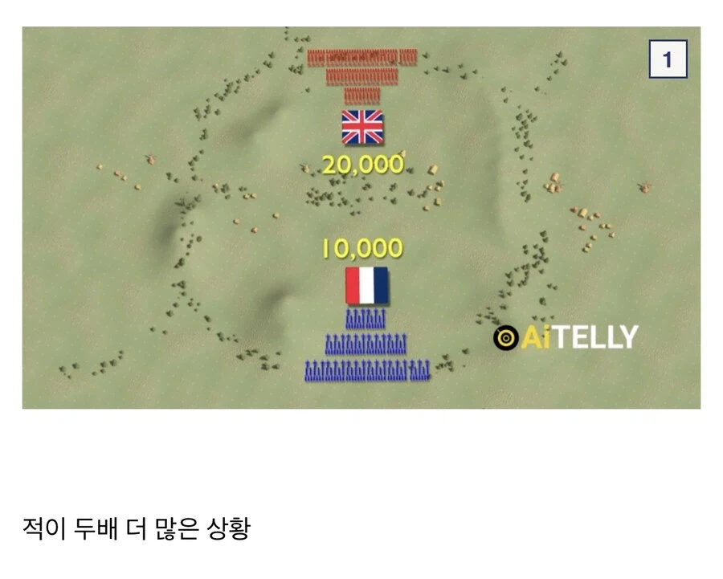
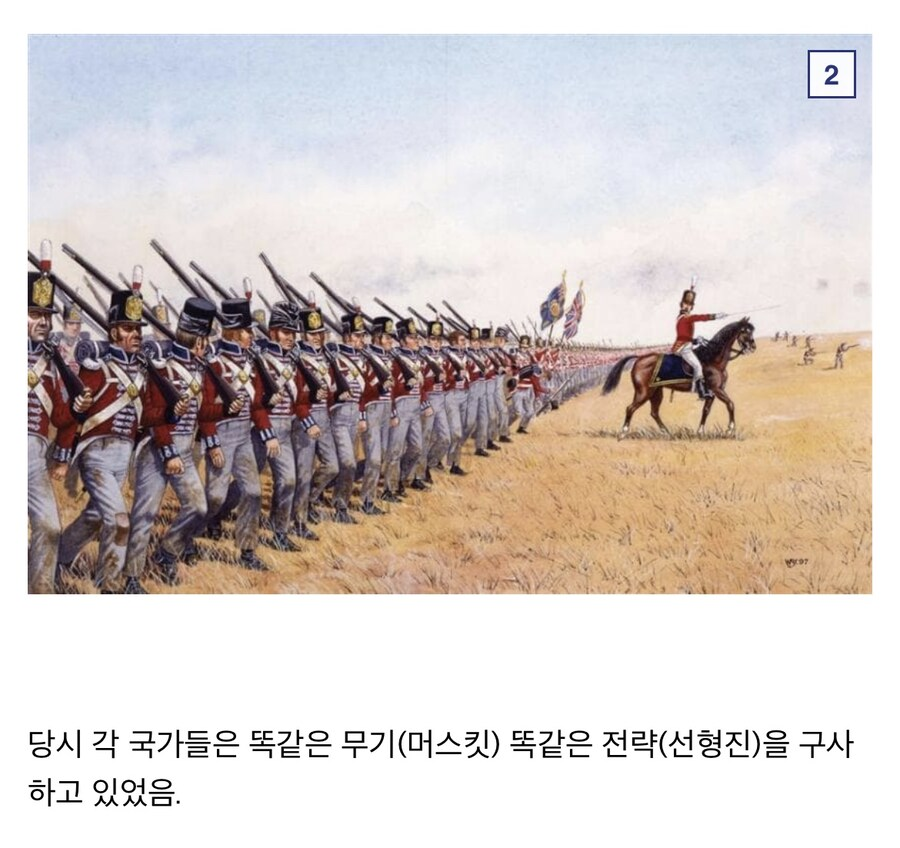
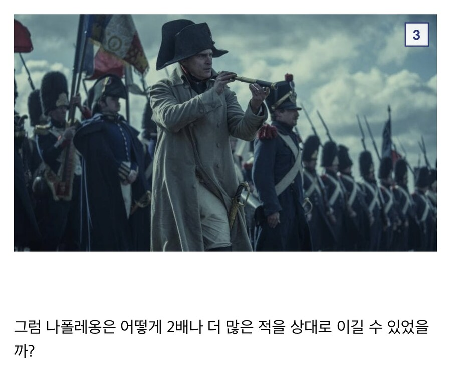
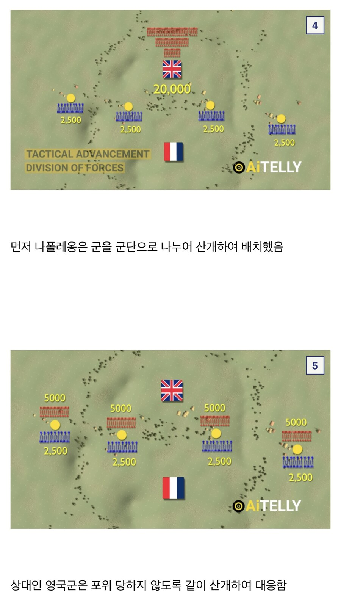
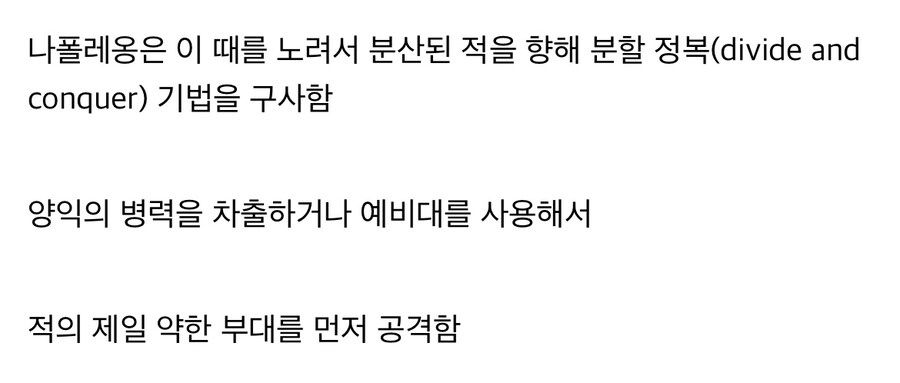
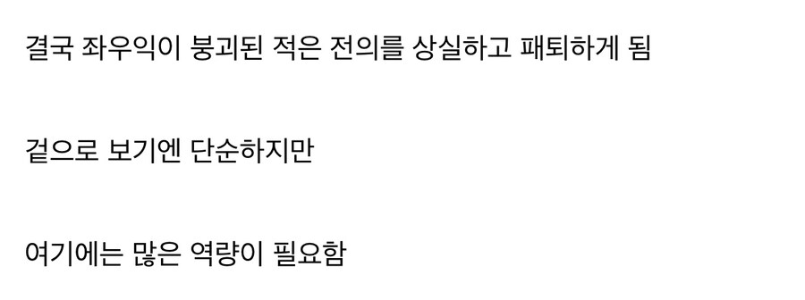
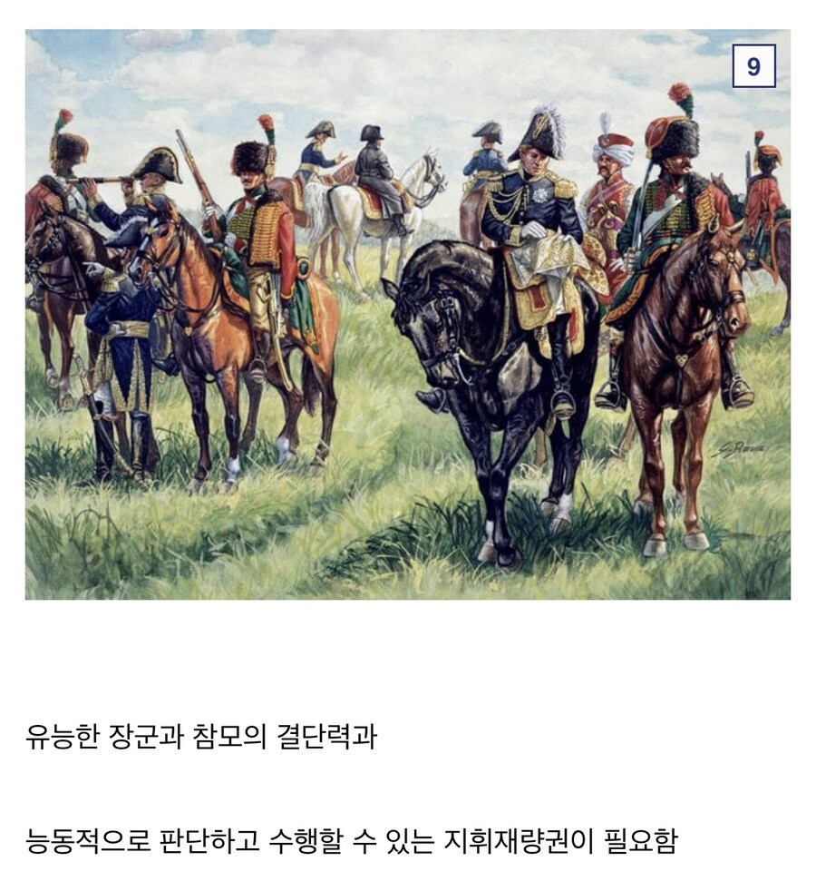
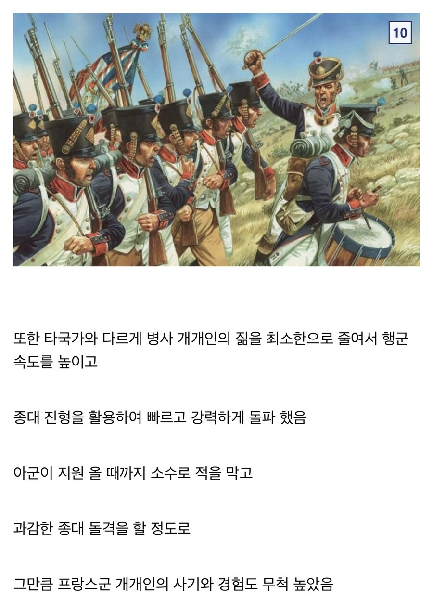
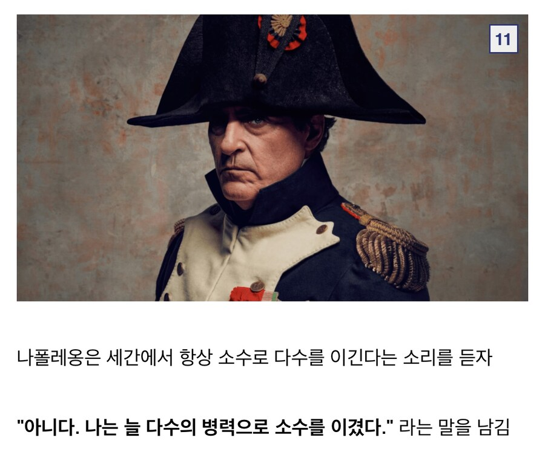

어떻게 했냐?









어떻게 했냐?
를 이긴 시베리아 동장군은 대체...
저런 대단한 군대는 러시아 원정 후 사라져서
워털루 전투 시점엔
일대 돌격대장 감인 놈이 좌익사령관으로 역사에 길이남은 기병대 꼴박을 보여주고
단위부대 지휘관 감인 놈이 우익 사령관으로 병력 1/3 데리고 실종되버림
Où est Grouchy
전쟁에 도가 텄네 ㅋㅋㅋㅋㅋ 입스타 구현 ㅋㅋㅋ
나폴레옹이 베르티에를 아낀 이유도 저런 기동성을 발휘해야 하는 전장에서 정리능력이 매우 뛰어났기 때문임
흔히 돌아다니는 사투리는 오버지만 베르티에가 병참선 정리, 나폴레옹이 전장파악으로 각개격파 시도할때 움직여야 될 병력 순서 같은 걸 찰떡같이 알아듣고 누구보다 기민하게 반응해줘서 총참모장이자 나폴레옹의 오른팔로 활약할 수 있었음
당시는 지금처럼 무전기가 있는것도 아니거니와 실시간 소통이 어려운 환경인데 나폴레옹이 말하면 그걸 최대한 짧은시간에 다른 지휘관들이 납득할 수 있는 방법으로 소통시킨거라 이짝도 말이안되는 인물이기도 하고
한가지 주목해야할게 나폴레옹 전쟁이 유럽식 기록문화 + 그 시기상 소부대 하나하나의 이동까지 재현 가능할 정도로 디테일하게 기록이 남아있는데
이 기록을 훑어보면 압도적으로 이긴 전투조차 그 과정에서 온갖 기열찐빠가 터지고 100% 완벽하게 끝낸 적이 없다시피 함
즉 연개소문이나 을지문덕, 이순신 같은 아시아쪽 기록에 인간병기로 남은 명장들도 실제론 얼마나 개고생하고 실수를 남발했을지, 전투와 전쟁이란게 얼마나 어려운 일인지 대충 짐작 가능하게 만들지
미리 짜둔 전쟁계획은 실전 돌입하고 5분만 지나도 각종 변수로 휴지조각이 된다는 소리가 있을 정도니까 ㅇㅇ
프랑스 6주 컷도 사실
독일, 프랑스 양쪽 찐빠가 어마어마하지
작전대로 되는 작전은 없다
덜 찐빠내는 쪽이 이기는건가
ㅇㅇ 현실은 토탈워가 아님
미국이 목숨걸고 통합 전술망 구현하는 이유도있고
전략시뮬게임 마우스딸깍도 아니고 내맘대로 우리군을 움직인다고?
나폴레옹이 마지막에 패했음에도 올타임 넘버원급으로 꼽히는 이유가 있지
워털루때는 진흙밭땜에 제시간 안에 저 전술이 안 먹히고 지휘 전달이 안되어서 결국..
저걸 해냄 : 나폴레옹(~1814)
저걸 못해냄 : 나폴레옹(워털루)
시도도 못함 : 크림 전쟁 영국군
친위대 썰 들어보면 짠했는데 참
전장에서는 나폴레옹 면전에서 욕박고 지랄하다가
나중에 죽은 관 돌아오니까 "이제 됐다 집에가서 다들 죽자" 하고 해산
"아빠, 배고파요! 밥 줘요!" "나도 없어 ㅅㅂ" (행군하다 배고파서 지나가던 황제하고 나눈 대화)
"누가 저 새끼 대가리에 총알 안 심어주냐?" (행군하다 개빡쳐서 지나가던 황제한테 한 말)
"걍 저도 병사로 자진강등해서 따라가면 안 될까요?"(황제가 유폐된다니까 장교들이 질질짜면서)
"좆까!" (최후의 전투에서 항복하라는 적군의 제안에)
"이제, 우리 모두 집에 돌아 가서 죽자!"(호호 할배 다 되어서 황제 관이 파리로 돌아온다니까 그 추운 겨울에 군복 입고 모인 영감탱이들이 사열식 마치고)
진짜 개씹상남자 집단...
차출당한 부대 : 아니 시발 그럼 우린 어쩌라고?
요즘 스타에서 AI가 이렇게 함
나폴레옹 피셜 "카이사르 흠 그정돈가..."
아니 근데 왜 손해가 없어요
말이쉽지 무전기도 없는 시대에서 저렇게 하는게 ㅋㅋㅋㅋㅋㅋㅋㅋㅋㅋ
무선통신도 없는데 저게 된다는 게 대단한데
나폴레옹 토탈워 그랜드 캠페인 하다가 맨날 프랑스만 하는것도 지겨워 영국,프로이센,러시아 등으로 대프랑스 동맹 맺고 프랑스 다구리치면 저 미친 나폴레옹 하나가 맵상의 대프랑스 동맹군을 말 그대로 갈아먹고 다니는걸 보게되는데...어우 쒯...내가 할땐 그냥 저냥인데 이게 적군이 되면 자연재해가 따로 없어 그냥...
게다가 대프랑스 동맹군은 말이 동맹이지 나폴레옹 나타나면 서로 다른 동맹군을 프렌드실드로 쓰고 뒷통수가 일상이여 그냥...분명 다굴치자고 모인건데 왜 옹기종기 모여서 차례대로 처맞고 있냐고... ㅠ
게임처럼 탑뷰도 아니고 말 탄 상태의 시선으로 보고 지휘를 해서 저 전술을 구사하는건 대단하네
저거 이해가 안 되는게 8500으로 5000 싸잡아먹을 수 있으면 나머지 부대는 5000 vs 500 하고 있는 건데 이 새끼들은 병신이라 아군이 1.5배 병력차 밀린다고 전멸당할 동안 10배 병력차도 못 이긴 거임??
일단 현실은 1인칭임.
당연히 무전으로 실시간 소통하던 시대도 아니고 눈 앞에 적이 500명만 있다고 옆에 숫자로 뜨는 것도 아니라
전장의 긴장감과 소음의 아비규환 속에서 어디로 갔을지도 모르는 적들 상대로 결단력있게 판단하기가 불가능했겠지..
그래서 나폴레옹 군대가 대단한 거고
아하 영국군은 5000vs500을 한번에 못이기는 군대였구나!!
러시아 동장군 : ㅎㅎㅋㅋㅈㅅ
동장군은 전체광역기에 도트딜이에요
양익이 빠져나간 진영의 병사들은 다시 자기 병력들이 돌아올 때까지 버텨야 하는 게 찐 실력이지
https://youtube.com/shorts/IarpBn55GFI?si=1IFuO0IZcPjntipb